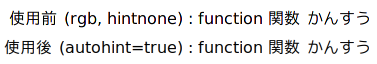

主に ~/tmp から救出したもの。とくに断りがなければソースは public domain 。
Download: cpp.py
test.py:
import cpp
import adder # addr.cpp を自動的にコンパイルしてインポート。
print adder.add(1, 2) # -> 3
adder.cpp:
#include <boost/python.hpp>
int add(int x, int y)
{
return x + y;
}
BOOST_PYTHON_MODULE(adder)
{
boost::python::def("add", add);
}
とりあえず UNIX 系 OS 上でのみ、 c++ -MM にて依存関係を調べ、必要なときだけコンパイルするようになっている。
cpp.compiler が distutils.ccompiler.CCompiler のインスタンスなので、ライブラリの追加等はこれをいじる。 boost_python-mt は追加済み。
Download: numarray.hpp
boost::python::numeric とは違い、必要に応じて連続な配列を作るので、配列へ直にアクセス可能。インターフェイスの詳細は numarray.hpp の冒頭コメントに。
arr_sum.cpp:
#include <boost/python.hpp>
#include "numarray.hpp"
int sum(cnumarray_in<int> arr)
{
int s = 0;
for(int i = 0; i < arr.shape(0); ++i)
{
s += arr[i];
}
return s;
}
test.py:
import arr_sum
arr = numarray.array([1, 2, 3])
print arr_sum.sum(arr) # -> 6
Python と numarray が必要。解凍したディレクトリで実行すると wave ファイルが生成されるはず。SIR とかで畳み込んでほげほげするなど。
Download: freetype-2.2.1-filter.patch / fonts.conf の例

これを実装してみたもの。このパッチを当てると、 rgba = rgb, bgr 以外ではまともに使えなくなる。 autohinter の利用を推奨。 hintstyle は強制的に hintslight 相当になる。ちなみに、上のスクリーンショットの日本語フォントは M+ 1p 。
もう上のパッチは古いです。 freetype の開発者 David Turner 氏による非公式パッチがあります。これに加えて、
を行ったパッチを置いておきます。
Download: mlterm-fast-redraw.patch
Expose イベントの再描画を一文字単位で行い、ちらつきを抑える。縦書対応が面倒で放置していたモノ。そのうちなんとかする予定…。効果を得るためには --enable-optimize-redrawing が必須。
Download: brown.cpp
周りの音が気になって集中できないときにどうぞ。
Download: oggcut.py / Win32 バイナリ
複数のストリームが重なっているファイルの切り出しにも使えるはず。 -c で CRC をチェックするのでコンテナの誤認識がほぼなくなるが、 CRC の計算コードが Python なので遅い。
2008/01/08: Win32 バイナリを追加。
y.fujii <y-fujii at mimosa-pudica.net>